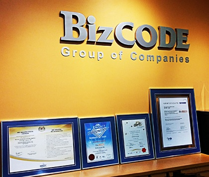

Bizcode Asia Sdn. Bhd. was established in year 2002 as an innovative IT provider to bring emerging technologies to digital market. With headquarter and R&D office in Malaysia and production, warehouse in China, we supply a full range of computer peripherals, office and home security products and mobile power pack in the retail industry, serving both the domestic and international market. In order to fulfill the greater demand in domestic market and to grab more market share in the central region, Bizcode Asia (KL) Sdn Bhd was established on 2005 with the product and marketing showroom at central region of Malaysia.  Bizcode was expanded its business to the whole Malaysia by established a branch office in 2008 which located in Sarawak. This branch will mainly focus in the market of East Malaysia. The company first expanded internationally in 2005 with the supply of computer peripherals into Thailand and Singapore market. International expansion was continued at the following years into several countries like Indonesia, Hong Kong and Poland. Now, the business already covered South East Asia, Europe and Africa. In year 2009, Bizcode become one of the Malaysia Government recognized R&D company with obtained “Malaysia Multimedia Super Corridor Status” or MSC status. At the following year, Bizcode obtained ISO 9001:2008 Quality Management Certificate. Bizcode's strengths lie in its hardworking in serving the customer satisfaction as target to build a long-term business partnership. We believe ourselves in leading this current trend and emerging technologies.
To publish and distribute high quality IT products in both domestic and international market.To serve a comprehensive range of life style & technology product in the IT retail industry.
Honoring our commitment to our customer.we carry out duties with pride to deliver efficiency services to customer.Adding Value to Customers through Creating Human Value First we pursue quantitative and qualitative business excellence, cultivate an image synonymous with customer satisfaction, and create a rewarding work environment.
Leading University
Id:1412020028
Department: CSE
Email: akilgazi.ioe@gmail.com
Leading University
Id:1412020037
Department: CSE
Email: piya@gmail.com
Leading University
Id:1412020032
Department: CSE
Email: shajeda@gmail.com